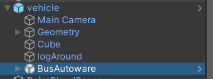

Lidar PCD Extractor Component
Prefab
To facilitate easier usage of this component, we have created a prefab located at:
Lidar types
As shown in the image above, two types of sensors can be defined: dynamic and static lidar scanners.
- Dynamic Sensors: These sensors move with the car.
- Static Sensors: These sensors function as roadside unit sensors that remain stationary during the simulation.
Ensure that all of these sensors, in addition to having the Lidar Sensor component (which all lidar sensors have in AWSIM), also have the RGLScanAdapter component. The code automatically finds these sensors and captures a shot from each position with the defined features on each of them.
Vehicle object
The BusAutoware object does not perform any functionality in this context and does not run according to the logic of an autonomous vehicle. Therefore, we have disabled all internal functionalities of this component. The purpose of this component is solely to provide realistic observations for dynamic sensors and to correctly represent blind spot positions. In other words, it acts merely as an obstruction of view, which is its intended role.

Lidar PCD Extractor
This component is mainly responsible for methods to capture data. The first method uses lanelets: when using the lanelet option, the scanner moves along the lines of the lanelet and scans the positions. The difference of this package compared to the original one is that the shots are stored separately and don't accumulate together.
The second method is using 'Read Poses From File'. When this option is set to true, you can use a CSV file as positions of the car. Then the system only captures the specific points that you have already inserted in the file. The file inputs positions and rotations.
Iteration
Iteration is the number of times that the test scenario is repeated. This feature helps to capture different types and conditions of cars, and also helps to collect complete data. The vehicle object has the 'Scanner Car' component, which is responsible for evaluating whether the state of the bus is reasonable or not. In case of collision of the bus with another object, or if the sensors intersect with another car, this capture will be denied (these cases occur because during these scan scenarios we only set the position of the car as specified in the file, and it may not be compatible with the current state which is actually available in the city).
Wait After Each Scan
We recommend setting it to 0, but if you want to see the process work at a slower speed, set a number that you prefer.
Sensor Search
There is no need to assign it, but if you assign the Sensor Search component to the same object, it will use it and automatically find and fill it.
The Sensor Search component is optional. This component will explore different setups of angles and positions and will create different states that could compare the results of each position in the final scans, which are separately captured.
Vehicle Game Object
This is a reference to the vehicle object. Consider that this game object is just a symbol and does not need to have movement logic; the lidar extractor component will move it in the city.
Output Files Direction
- Output PCD File Path: The files of the lidar scan will be saved in the directory with the prefix that you have set at the end of this string.
- Output CSV File Path: In this directory, with this name, a CSV file will be created that shows the position, rotation, and extra information of sensors. This file is required to understand which PCD file is related to which experiment and which sensor.
Root Static Sensors
This is a reference to an object that is the parent of the static sensors. In the code, we will search the children of this object to find the static sensors.
Wait Time
This is the time that the entire system lets the city run its traffic before sampling starts.
Log Around the Car
'Log Around the Car' is a component that is attached to the vehicle and saves the logs of cars which are near the car in the scan environment. You can leave it null or entirely ignore it, but it will save some data related to blind spots and cars or vehicles that are never seen or seen by which sensors.
Lidar PCD Extractor and Sensor Search